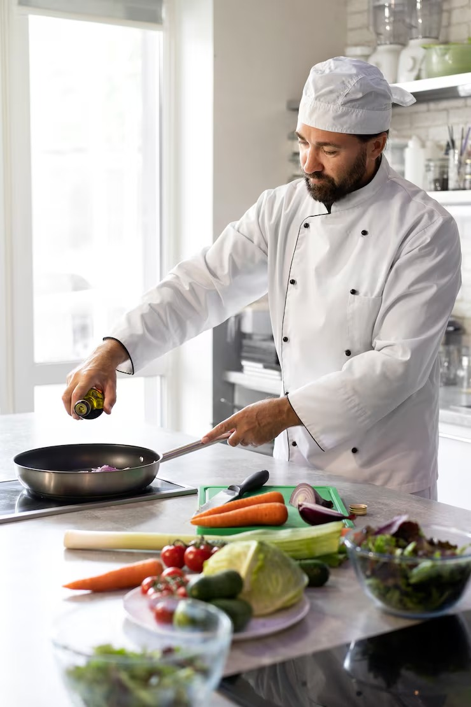

ChefPad es una plataforma digital colaborativa diseñada para
transformar la manera en que planificas y preparas tus comidas.
Nuestro objetivo es ayudarte a cocinar de forma inteligente,
reduciendo el desperdicio de alimentos, optimizando tu
presupuesto y descubriendo nuevas combinaciones culinarias
basadas en los ingredientes que ya tienes disponibles.
Conectamos a chefs expertos, cocineros apasionados y usuarios
que desean planificar sus comidas de manera práctica y
económica. Aquí no solo encuentras recetas: encuentras
soluciones.


Estofado de ternera

Carne de sésamo

Bowl de fideos tailandés

Tacos mexicanos

Pan de calabaza

Salmón con verduras